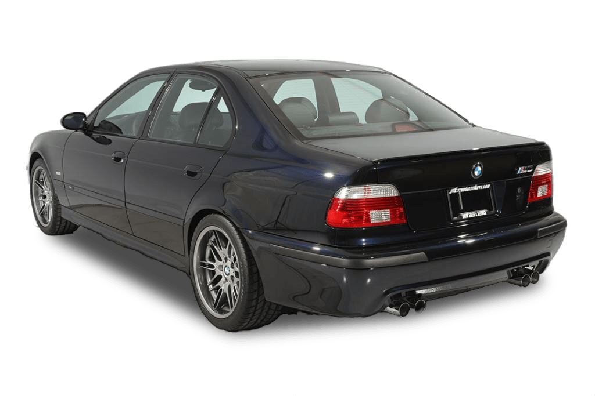

Интересная история

BMW M5 E39 - Икона скорости и стиля
Наиболее мощной «пятеркой», традиционна, является М5. Серия Е39 не стала исключением. Восьмицилиндровый
двигатель рабочим объемом 4,9 л, оборудованный системой Doppel-VANOS и восемью индивидуальными дроссельными
заслонками, развивает мощность 400 л.с. Это позволяет машине набирать скорость 100 км/ч с места за 5,3 с. BMW
M5 E39 комплектовалась только механической 6-ступенчатой коробкой передач, а максимальная скорость модели,
как и большинства мощных немецких автомобилей, была ограничена принудительно 250 км/ч.
{% endblock %}